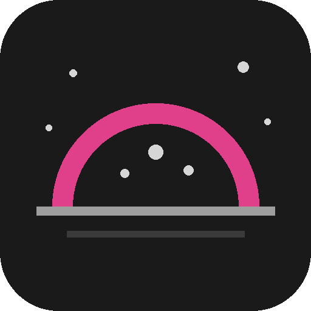
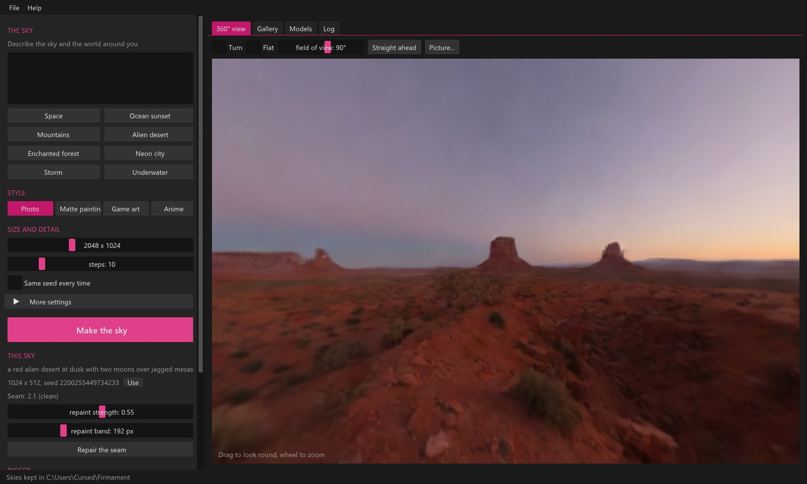

A desktop app
Firmament for Windows, in C++: no Python, no ComfyUI. Unzip it, get the models in one click, describe a sky. The painter is stable-diffusion.cpp on your NVIDIA card. Part of Atelier.

360° skyboxes from a prompt, made on your own GPU.
A skybox Firmament made: drag to look round.

Firmament for Windows, in C++: no Python, no ComfyUI. Unzip it, get the models in one click, describe a sky. The painter is stable-diffusion.cpp on your NVIDIA card. Part of Atelier.
Size, steps, guidance, the 360° LoRA's strength, shift, sampler and schedule, the seam repair's strength and band, the cube faces' size. Lock the seed to try small changes to the words.
Write a scene, or pick one: space, an ocean sunset, mountains, an alien desert. Firmament paints the whole sphere round you in one 2048 × 1024 panorama, and shows it in a 360° view you drag to look round.
Krea 2 Turbo with a LoRA trained on equirectangular panoramas: a level horizon, the sky and the ground at the poles, and left and right edges that meet.
Fix seam turns the panorama half way round and repaints a band across the join, then blends it back in, so the wrap disappears. Every skybox gets a seam score.
2× or 4× (Real-ESRGAN in the app, 4x-UltraSharp on ComfyUI), padded with the opposite edge first so the upscaled panorama still wraps without a seam.
Download the panorama (Unity, Unreal, Godot and Blender take it as it is), six cube faces in a zip, or a cross layout.
The web app prints a QR code when it starts: scan it and the whole studio opens on your phone over WiFi, 360° view included.